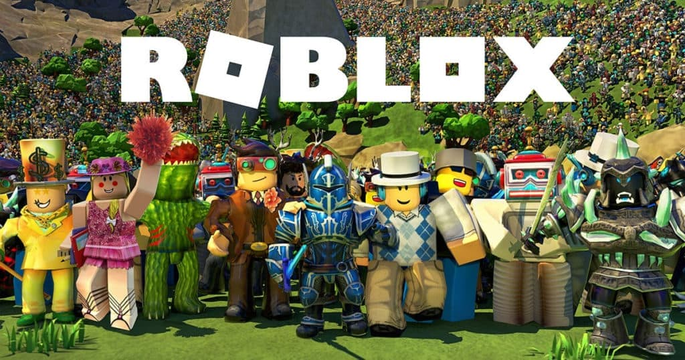

Overview
Roblox is an online platform that allows users to create, share, and play games created by other users. It features a wide range of user-generated content and provides a vast, interactive virtual world where players can explore, socialize, and create their own games and experiences. Roblox’s versatility and community-driven nature have made it immensely popular among players of all ages.
Gameplay
Creative Freedom
Roblox offers unparalleled creative freedom, allowing players to design their own games and virtual worlds using Roblox Studio. This open-ended approach enables users to bring their unique ideas to life and share them with a global audience.
Variety of Games
The platform hosts a vast array of games across different genres, from action and adventure to simulation and role-playing. This variety ensures that there is something for everyone, catering to diverse interests and play styles.
Graphics
Blocky Aesthetic
Roblox features a distinctive blocky aesthetic that contributes to its unique visual style. While the graphics are not highly realistic, the simple, stylized design allows for extensive creativity and customizability within the platform.
Customizable Avatars
Players can customize their avatars with a wide range of clothing, accessories, and animations. This personalization allows users to express their individuality and stand out in the Roblox community.
Multiplayer
Social Interaction
Roblox fosters social interaction by enabling players to join friends in various games, chat, and collaborate on projects. The platform’s social features enhance the overall experience by promoting teamwork and community engagement.
Game Creation and Sharing
Users can create their own games and share them with others. This collaborative aspect encourages creativity and allows players to build and refine their games based on feedback from the community.
Educational Value
Learning Tool
Roblox can serve as an educational tool by teaching programming and game design skills through its Roblox Studio. It provides a hands-on approach to learning coding and game development concepts in a fun and engaging way.
Community and Mods
Community Engagement
The Roblox community is vibrant and active, with players and developers continuously creating and sharing new content. This community-driven aspect keeps the platform dynamic and ever-evolving.
Updates and Expansions
Roblox regularly updates and expands its platform, introducing new features, tools, and events. These updates enhance the gaming experience and keep the platform fresh and engaging for users.
Reception
Critical Acclaim
Roblox has received positive reviews for its innovative approach to user-generated content and its extensive range of experiences. It has been praised for its creativity and the opportunities it provides for players to express themselves.
Player Experience
Players enjoy Roblox for its flexibility, social aspects, and the ability to create and share their own content. The platform’s diverse offerings ensure that players can find something that suits their interests and preferences.
Pros and Cons
- Creative Freedom: Roblox’s platform allows for extensive creativity in game design and customization.
- Community Engagement: The active community and regular updates keep the experience fresh and dynamic.
- Educational Value: Provides opportunities to learn programming and game design skills.
- Inconsistent Quality: The quality of user-generated games can vary significantly, with some experiences being less polished.
- Microtransactions: The platform includes various in-game purchases that can add up over time.
- Safety Concerns: As a platform with user-generated content, there are potential safety concerns that need to be managed, especially for younger players.
Conclusion
In conclusion, Roblox is a versatile platform that offers extensive creative freedom and a wide range of experiences. Its community-driven nature and educational potential make it a valuable tool for both play and learning, though it’s important to be aware of its limitations and potential drawbacks.